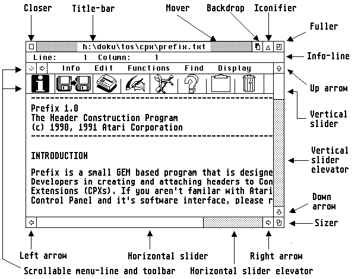

This library makes functions available to create, open and close windows, and much more. In all the following routines are available:
| • sys_set_winframe_manager | Install a new window-frame manager |
| • wind_apfind | Obtains application ID from a window position specification |
| • wind_calc | Calculates window dimensions |
| • wind_close | Closes windows |
| • wind_create | Creates windows |
| • wind_delete | Deletes windows |
| • wind_draw | Redraws window components |
| • wind_find | Obtains window ID from a position specification |
| • wind_get | Obtains properties of a window |
| • wind_new | Deletes all windows |
| • wind_open | Opens window |
| • wind_set | Alters properties of a window |
| • wind_update | Blocks or releases screen operations |
| • wind_xget | Obtains properties of a window, extended version |
| • wind_xset | Alters properties of a window, extended version |
| • x_wdial_change | Redraw one object within a window dialog, showing a new state |
| • x_wdial_draw | Redraw a dialog within a window |
| • x_wind_calc | Calculates window dimensions, extended version |
| • x_wind_create | Initializes a new window, extended version |
| • x_wind_tree | Change window gadgets |
Note: Under MagiC a single application should not use more than 16 windows, as otherwise the message buffer of the system may overflow and then it may not be possible to perform redraws any more.
See also:
Components of a window Style guidelines Window-dialogs
Overview of the wind_get/set subfunctions wind_get and wind_set mode in Geneva
| Name: | »Find window owner« - Find the owner's application ID of a
window at the given coordinates.
| ||||||
| Opcode: | 119 (0x0077)
| ||||||
| Syntax: | int16_t wind_apfind ( int16_t wi_fmx, int16_t wi_fmy );
| ||||||
| Description: | The call wind_apfind obtains the application ID of the owner of
a window that is found at a given position. The following apply:
| ||||||
| Return value: | The function returns the corresponding application ID. Here the
value 0 represents the desktop, while -1 means that no window is
present at the specified position.
| ||||||
| Availability: | Available as of MultiGEM II.
| ||||||
| Group: | Window library
| ||||||
| See also: | Binding wind_find wind_get
|
| C: | int16_t wind_apfind ( int16_t wi_fmx, int16_t wi_fmy );
| |||||||||||||||||||||||||||
| Binding: |
int16_t wind_apfind (int16_t wi_fmx, int16_t wi_fmy) { int_in[0] = wi_fmx; int_in[1] = wi_fmy; return ( crys_if(119) ); } | |||||||||||||||||||||||||||
| GEM-Arrays: |
|
| Name: | »Window calculation« - Calculates the limits or the total
space requirement of a window
| ||||||||||||||||||||||||
| Opcode: | 108
| ||||||||||||||||||||||||
| Syntax: | int16_t wind_calc ( int16_t wi_ctype, int16_t wi_ckind, int16_t
wi_cinx, int16_t wi_ciny, int16_t wi_cinw, int16_t wi_cinh, int16_t
*coutx, int16_t *couty, int16_t *coutw, int16_t *couth );
| ||||||||||||||||||||||||
| Description: | The call wind_calc calculates the size of the border area from
the coordinates of the working area of a specific window, or vice
versa. The following apply:
Note: One should never assume that the components of a window have a given size or position, but always use this function. Even then, the calculated height will be incorrect if the window has a toolbar attached to it; this can be corrected by adjusting the value by the height of the toolbar (see also below). WINX extension: Premise: appl_getinfo (opcode 22360) If one sets bit 15 in wi_ctype (e.g. by addition of the constant WC_WIN (=$8000)) and in wi_ckind passes the ID of a window instead of the window components, it is possible to obtain more exact dimensions for the window, as the function can take into account the current properties of the window (e.g. a toolbar). Additionally the function performs an auto-correction of the structure area, which is also performed by functions such as wind_open, wind_set( WF_CURRXYWH) when necessary and if supported by the AES. | ||||||||||||||||||||||||
| Return value: | An error has arisen only if the value 0 is returned.
| ||||||||||||||||||||||||
| Availability: | All AES versions.
| ||||||||||||||||||||||||
| Group: | Window library
| ||||||||||||||||||||||||
| See also: | Binding wind_create Problems with toolbars
|
| C: | int16_t wind_calc ( int16_t wi_ctype, int16_t wi_ckind, int16_t
wi_cinx, int16_t wi_ciny, int16_t wi_cinw, int16_t wi_cinh, int16_t
*coutx, int16_t *couty, int16_t *coutw, int16_t *couth );
| |||||||||||||||||||||||||||||||||||||||||||||||||||
| Binding: |
int16_t wind_calc (int16_t wi_ctype, int16_t wi_ckind, int16_t wi_cinx, int16_t wi_ciny, int16_t wi_cinw, int16_t wi_cinh, int16_t *coutx, int16_t *couty, int16_t *coutw, int16_t *couth) { int_in[0] = wi_ctype; int_in[1] = wi_ckind; int_in[2] = wi_cinx; int_in[3] = wi_ciny; int_in[4] = wi_cinw; int_in[5] = wi_cinh; crys_if (108); *coutx = int_out[1]; *couty = int_out[2]; *coutw = int_out[3]; *couth = int_out[4]; return ( int_out[0] ); } | |||||||||||||||||||||||||||||||||||||||||||||||||||
| GEM-Arrays: |
|
| Name: | »Close window« - Close a window
|
| Opcode: | 102
|
| Syntax: | int16_t wind_close ( int16_t wi_clhandle );
|
| Description: | The call wind_close removes the window with the ID
wi_clhandle from the screen (closes it).
Note: The window will only be deleted irrevocably by a call of wind_delete. |
| Return value: | An error has arisen only if the value 0 is returned.
|
| Availability: | All AES versions.
|
| Group: | Window library
|
| See also: | Binding wind_open wind_delete
|
| C: | int16_t wind_close ( int16_t wi_clhandle );
| ||||||||||||||||||||||||
| Binding: |
int16_t wind_close (int16_t wi_clhandle) { int_in[0] = wi_clhandle; return ( crys_if(102) ); } | ||||||||||||||||||||||||
| GEM-Arrays: |
|
| Name: | »Window create« - Initializes a new window
| ||||||||||||||||||||||||||||||||||||||||||||||||||||||
| Opcode: | 100
| ||||||||||||||||||||||||||||||||||||||||||||||||||||||
| Syntax: | int16_t wind_create ( int16_t wi_crkind, int16_t wi_crwx,
int16_t wi_crwy, int16_t wi_crww, int16_t wi_crwh );
| ||||||||||||||||||||||||||||||||||||||||||||||||||||||
| Description: | The call wind_create attempts to initialize a new window
structure with the AES and at the same time determines its
appearance and maximum size; it also allocates the memory required for
it. Note that this call does not actually display the window on-screen
- you need to follow it with a wind_open call for this.
wi_crwx, wi_crwy, wi_crww, wi_crwh set the maximum extent of the window. wi_crkind describes the components as a bit-vector:
Notes: HOTCLOSEBOX is only available as of PC-GEM or MagiC Version 2.0 (in each case). Window borders that are not needed (e.g. bottom border) will be omitted as of AES Version 4.x or MagiC 3; this makes available a few more pixels of usable area. MENUBAR is only available in XaAES. It reserves room for a menu bar widget in the window. The menu bar itself is attached to the window by wind_set. Setting BORDER will make XaAES allow for window border sizing without the SIZER widget being used. ICONIFIER is available only as of AES Version 4.1. The presence of newer components such as the iconify button, for instance, is best inquired for by using appl_getinfo (opcode 11). | ||||||||||||||||||||||||||||||||||||||||||||||||||||||
| Return value: | The function returns a non-negative handle if the AES still
has a free window handle available. A return value smaller than 0
(i.e. negative) signals an error or no more free handles available.
| ||||||||||||||||||||||||||||||||||||||||||||||||||||||
| Availability: | All AES versions.
| ||||||||||||||||||||||||||||||||||||||||||||||||||||||
| Group: | Window library
| ||||||||||||||||||||||||||||||||||||||||||||||||||||||
| See also: | Binding wind_delete
|
| C: | int16_t wind_create ( int16_t wi_crkind, int16_t wi_crwx,
int16_t wi_crwy, int16_t wi_crww, int16_t wi_crwh );
| ||||||||||||||||||||||||||||||||||||
| Binding: |
int16_t wind_create (int16_t wi_crkind, int16_t wi_crwx, int16_t wi_crwy, int16_t wi_crww, int16_t wi_crwh) { int_in[0] = wi_crkind; int_in[1] = wi_crwx; int_in[2] = wi_crwy; int_in[3] = wi_crww; int_in[4] = wi_crwh; return ( crys_if(100) ); } | ||||||||||||||||||||||||||||||||||||
| GEM-Arrays: |
|
| Name: | »Delete window« - Delete a window
|
| Opcode: | 103
|
| Syntax: | int16_t wind_delete ( int16_t wi_dhandle );
|
| Description: | The call wind_delete destroys the window with the ID
wi_dhandle and releases the relevant window handle again, as
well as releasing any memory allocated to it.
Note: A window should be closed with wind_close before deleting it. |
| Return value: | An error has arisen only if the value 0 is returned.
|
| Availability: | All AES versions.
|
| Group: | Window library
|
| See also: | Binding wind_create wind_close
|
| C: | int16_t wind_delete ( int16_t wi_dhandle );
| ||||||||||||||||||||||||
| Binding: |
int16_t wind_delete (int16_t wi_dhandle) { int_in[0] = wi_dhandle; return ( crys_if(103) ); } | ||||||||||||||||||||||||
| GEM-Arrays: |
|
| Name: | »Draw window« - Redraw the window components
| ||||||
| Opcode: | 99
| ||||||
| Syntax: | int16_t wind_draw ( int16_t wi_dhandle, int16_t wi_dstartob );
| ||||||
| Description: | The call wind_draw redraws the non-client area (window
components) of a window with the ID wi_dhandle, taking the
rectangle list into account.
Note: This function is available only under N.AES and is of relatively little interest for "normal" applications. It is used specially by the internal screen-manager for the drawing of window objects. | ||||||
| Return value: | An error has arisen only if the value 0 is returned.
| ||||||
| Availability: | The presence of this function can be checked for with appl_getinfo
(opcode 65).
| ||||||
| Group: | Window library
| ||||||
| See also: | Binding
|
| C: | int16_t wind_draw ( int16_t wi_dhandle, int16_t wi_dstartob );
| |||||||||||||||||||||||||||
| Binding: |
int16_t wind_draw ( int16_t wi_dhandle, int16_t wi_dstartob ); { int_in[0] = wi_dhandle; int_in[1] = wi_dstartob; return ( crys_if(99) ); } | |||||||||||||||||||||||||||
| GEM-Arrays: |
|
| Name: | »Find window« - Find the ID of a window at the given
coordinates.
| ||||||
| Opcode: | 106
| ||||||
| Syntax: | int16_t wind_find ( int16_t wi_fmx, int16_t wi_fmy );
| ||||||
| Description: | The call wind_find obtains the ID of the window that is found
at a given position. The following apply:
| ||||||
| Return value: | The function returns the corresponding window ID. Here the
value 0 represents the desktop, while -1 means that no window is
present at the specified position.
| ||||||
| Availability: | All AES versions.
| ||||||
| Group: | Window library
| ||||||
| See also: | Binding wind_get
|
| C: | int16_t wind_find ( int16_t wi_fmx, int16_t wi_fmy );
| |||||||||||||||||||||||||||
| Binding: |
int16_t wind_find (int16_t wi_fmx, int16_t wi_fmy) { int_in[0] = wi_fmx; int_in[1] = wi_fmy; return ( crys_if(106) ); } | |||||||||||||||||||||||||||
| GEM-Arrays: |
|
| Name: | »Get window« - Obtains various properties of a window.
| ||||||||||||||||||||||||||||||||||||||||||||||||||||||||||||||||||||||||||||||||||||||||||||||||||||||||||||||||||||||||||||||||||||||||||||||||||||||||||||||||||||||||||||||||||||||||||||||||
| Opcode: | 104
| ||||||||||||||||||||||||||||||||||||||||||||||||||||||||||||||||||||||||||||||||||||||||||||||||||||||||||||||||||||||||||||||||||||||||||||||||||||||||||||||||||||||||||||||||||||||||||||||||
| Syntax: | int16_t wind_get ( int16_t wi_ghandle, int16_t wi_gfield,
int16_t *wi_gw1, int16_t *wi_gw2, int16_t *wi_gw3, int16_t *wi_gw3 );
| ||||||||||||||||||||||||||||||||||||||||||||||||||||||||||||||||||||||||||||||||||||||||||||||||||||||||||||||||||||||||||||||||||||||||||||||||||||||||||||||||||||||||||||||||||||||||||||||||
| Description: | Depending on the parameters passed, the call wind_get returns
information about various properties of the window with the ID
wi_ghandle. The following apply for wi_gfield:
Summary of all subfunctions; numbers in brackets represent the wi_gfield mode:
Note: The parameters wi_gw1, wi_gw2, wi_gw3 and wi_gw4 here are pure output parameters. | ||||||||||||||||||||||||||||||||||||||||||||||||||||||||||||||||||||||||||||||||||||||||||||||||||||||||||||||||||||||||||||||||||||||||||||||||||||||||||||||||||||||||||||||||||||||||||||||||
| Return value: | An error has arisen only if the value 0 is returned.
| ||||||||||||||||||||||||||||||||||||||||||||||||||||||||||||||||||||||||||||||||||||||||||||||||||||||||||||||||||||||||||||||||||||||||||||||||||||||||||||||||||||||||||||||||||||||||||||||||
| Availability: | All AES versions.
| ||||||||||||||||||||||||||||||||||||||||||||||||||||||||||||||||||||||||||||||||||||||||||||||||||||||||||||||||||||||||||||||||||||||||||||||||||||||||||||||||||||||||||||||||||||||||||||||||
| Group: | Window library
| ||||||||||||||||||||||||||||||||||||||||||||||||||||||||||||||||||||||||||||||||||||||||||||||||||||||||||||||||||||||||||||||||||||||||||||||||||||||||||||||||||||||||||||||||||||||||||||||||
| See also: | Binding wind_set Subfunctions overview
|
| C: | int16_t wind_get ( int16_t wi_ghandle, int16_t wi_gfield,
int16_t *wi_gw1, int16_t *wi_gw2, int16_t *wi_gw3, int16_t *wi_gw3 );
| |||||||||||||||||||||||||||||||||||||||
| Binding: |
int16_t wind_get ( int16_t wi_ghandle, int16_t wi_gfield, int16_t *wi_gw1, int16_t *wi_gw2, int16_t *wi_gw3, int16_t *wi_gw3) { int_in[0] = wi_ghandle; int_in[1] = wi_gfield; crys_if (104); *wi_gw1 = int_out[1]; *wi_gw2 = int_out[2]; *wi_gw3 = int_out[3]; *wi_gw4 = int_out[4]; return ( int_out[0] ); } | |||||||||||||||||||||||||||||||||||||||
| GEM-Arrays: |
|
| Name: | »New window« - Close all windows.
|
| Opcode: | 109
|
| Syntax: | void wind_new ( void );
|
| Description: | The call wind_new closes and deletes all windows, and
resets the blocks set with wind_update as well as the mouse pointer
'hide' count.
Note about MagiC: Here the function is applied as a global and comprehensive clean-up function for an application, and also deletes its update requests, windows, menus etc. Other applications will never be impaired. |
| Return value: | The function does not provide a return.
|
| Availability: | Since AES version 1.4
|
| Group: | Window library
|
| See also: | Binding wind_create wind_close wind_update
|
| C: | void wind_new ( void );
| ||||||||||||||||||
| Binding: |
void wind_new (void) { crys_if (109); } | ||||||||||||||||||
| GEM-Arrays: |
|
| Name: | »Open window« - Opens a window.
| ||||||||||||
| Opcode: | 101
| ||||||||||||
| Syntax: | int16_t wind_open ( int16_t wi_ohandle, int16_t wi_owx, int16_t
wi_owy, int16_t wi_oww, int16_t wi_owh );
| ||||||||||||
| Description: | The call wind_open displays a window on the screen. The
following apply:
Note: The window must have been created beforehand with wind_create. The components title-bar, info-line and slider must have been set previously with a call of wind_set. When specifying the coordinates -1,-1,-1,-1 for MagiC 3 onwards, the window will be placed at the next free position for iconifiable windows. | ||||||||||||
| Return value: | An error has arisen only if the value 0 is returned.
| ||||||||||||
| Availability: | All AES versions.
| ||||||||||||
| Group: | Window library
| ||||||||||||
| See also: | Binding wind_create wind_close wind_set
|
| C: | int16_t wind_open ( int16_t wi_ohandle, int16_t wi_owx, int16_t
wi_owy, int16_t wi_oww, int16_t wi_owh );
| ||||||||||||||||||||||||||||||||||||
| Binding: |
int16_t wind_open (int16_t wi_ohandle, int16_t wi_owx, int16_t wi_owy, int16_t wi_oww, int16_t wi_owh) { int_in[0] = wi_ohandle; int_in[1] = wi_owx; int_in[2] = wi_owy; int_in[3] = wi_oww; int_in[4] = wi_owh; return ( crys_if(101) ); } | ||||||||||||||||||||||||||||||||||||
| GEM-Arrays: |
|
| Name: | »Set window« - Alter various window attributes.
| ||||||||||||||||||||||||||||||||||||||||||||||||||||||||||||||||||||||||||||||||||||||||||||||||||||||||||||||||||||||||||||||||||||||||||||||||||||||||||||||||||||||||||||||||||||||||||||||||||
| Opcode: | 105
| ||||||||||||||||||||||||||||||||||||||||||||||||||||||||||||||||||||||||||||||||||||||||||||||||||||||||||||||||||||||||||||||||||||||||||||||||||||||||||||||||||||||||||||||||||||||||||||||||||
| Syntax: | int16_t wind_set ( int16_t wi_shandle, int16_t wi_sfield,
int16_t wi_sw1, int16_t wi_sw2, int16_t wi_sw3, int16_t wi_sw4 );
| ||||||||||||||||||||||||||||||||||||||||||||||||||||||||||||||||||||||||||||||||||||||||||||||||||||||||||||||||||||||||||||||||||||||||||||||||||||||||||||||||||||||||||||||||||||||||||||||||||
| Description: | Depending on the passed parameters, the call wind_set alters
various atributes of the window with the ID wi_shandle. The
following apply for wi_sfield:
Overview of all subfunctions; numbers in brackets represent the wi_sfield mode:
Note: The parameters wi_sw1, wi_sw2, wi_sw3 and wi_sw4 here are dependent on the function number passed in the parameter wi_sfield. When specifying the window name, one should always leave a space before and after the character string for aesthetic reasons, since otherwise the pattern in the title-bar abuts directly to the first and last character of the name. Warning: The opcodes listed here are no longer fully compatible with PC-GEM as development there proceeded in a different direction. | ||||||||||||||||||||||||||||||||||||||||||||||||||||||||||||||||||||||||||||||||||||||||||||||||||||||||||||||||||||||||||||||||||||||||||||||||||||||||||||||||||||||||||||||||||||||||||||||||||
| Return value: | An error has arisen only if the value 0 is returned.
| ||||||||||||||||||||||||||||||||||||||||||||||||||||||||||||||||||||||||||||||||||||||||||||||||||||||||||||||||||||||||||||||||||||||||||||||||||||||||||||||||||||||||||||||||||||||||||||||||||
| Availability: | All AES versions.
| ||||||||||||||||||||||||||||||||||||||||||||||||||||||||||||||||||||||||||||||||||||||||||||||||||||||||||||||||||||||||||||||||||||||||||||||||||||||||||||||||||||||||||||||||||||||||||||||||||
| Group: | Window library
| ||||||||||||||||||||||||||||||||||||||||||||||||||||||||||||||||||||||||||||||||||||||||||||||||||||||||||||||||||||||||||||||||||||||||||||||||||||||||||||||||||||||||||||||||||||||||||||||||||
| See also: | Binding wind_get wind_create OBJECT Subfunctions overview
|
As of PC-GEM Version 2.0 the following apply:
WF_ATTRB (18): This sets the window attribute vector. Here: wi_sw1 = 0 (or 1): Window is the top window, or not; apart from this there is no further information available.
WF_SIZETOP (19): This makes the window an active one, without changing the order of the other windows. At the same time the position and size of the window can be reset:
| wi_sw1 = | X-position, and |
| wi_sw2 = | Y-position of top left corner, |
| wi_sw3 = | Width, and |
| wi_sw4 = | Height of the window |
| C: | int16_t wind_set ( int16_t wi_shandle, int16_t wi_sfield,
int16_t wi_sw1, int16_t wi_sw2, int16_t wi_sw3, int16_t wi_sw4 );
| |||||||||||||||||||||||||||||||||||||||
| Binding: |
int16_t wind_set ( int16_t wi_shandle, int16_t wi_sfield, int16_t wi_sw1, int16_t wi_sw2, int16_t wi_sw3, int16_t wi_sw4 ) { int_in[0] = wi_shandle; int_in[1] = wi_sfield; int_in[2] = wi_sw1; int_in[3] = wi_sw2; int_in[4] = wi_sw3; int_in[5] = wi_sw4; return ( crys_if(105) ); } | |||||||||||||||||||||||||||||||||||||||
| GEM-Arrays: |
|
A class of windows that will always 'float' ontop of classical windows. One key feature of windows in any WF_TOPMOST state is that they do not disturb current keyboard focus, and can be used to issue important messages, status raports, etc., without demanding user interaction.
wind_set (wi_shandle, WF_TOPMOST, wi_sw1,...)
WF_TOPMOST (232)
| wi_sw1 = |
|
Some common characteristics of windows with any WF_TOPMOST state set;
State 1:
Setting state 1 will make the corresponding window 'float' ontop
of all other classical windows. State 1 windows will stay ontop until
closed by the user or the application itself.
State 2:
Setting state 1 will make the corresponding window act like
windows with state 1 set, with one important exception; The window is
linked to the window owner's focus status. This means that when the
application that owns the window looses focus, state 2 windows are
automatically made unvisible by the AES. When the application
regains focus, the window is automatically made visible again. This is
done automatically, and no application handling is necessary.
| Name: | »Update window« - Blocks or releases screen operations.
| ||||||||||||
| Opcode: | 107
| ||||||||||||
| Syntax: | int16_t wind_update ( int16_t wi_ubegend );
| ||||||||||||
| Description: | The call wind_update signals the AES that a user application
is currently redrawing the screen. Following this, the AES
restricts its own graphical 'activities' such as the dropping down of
menus or the moving of windows, for instance.
MagiC implements the 'check and set mode' of AES 4.00. The call then is wind_update (BEG_UPDATE|0x100) or and_update (BEG_MCTRL|0x100), i.e. a logical OR with a NO_BLOCK mask (0x100). Here the update control is only applied if no other application has control of the screen semaphore. If it has, the function returns at once with an error-value of 0. Note: It is recommended that this function be used only for time-sensitive applications (e.g. terminal programs etc.) where long redraws by another applications could cause a timeout. All wind_update modes nest, so to release the screen semaphore the same number of END_UPDATE calls must be received as BEG_UPDATEs were made, but it is preferable to design applications that avoid nesting these calls. Both the BEG_xxx calls should be used before displaying a form or a popup to stop them from being overwritten, or mouse clicks to them being passed to other applications. Also, make sure you wait until after BEG_UPDATE has been called before turning off the mouse cursor when updating the screen. The presence of this feature can be inquired for with appl_getinfo (opcode 11). | ||||||||||||
| Return value: | An error has arisen only if the value 0 is returned.
| ||||||||||||
| Availability: | All AES versions.
| ||||||||||||
| Group: | Window library
| ||||||||||||
| See also: | Binding
|
| C: | int16_t wind_update ( int16_t wi_ubegend );
| ||||||||||||||||||||||||
| Binding: |
int16_t wind_update (int16_t wi_ubegend) { int_in[0] = wi_ubegend; return ( crys_if(107) ); } | ||||||||||||||||||||||||
| GEM-Arrays: |
|
| Name: | »Get window« - Obtain properties of a window, extended
version.
| ||||||
| Opcode: | 104
| ||||||
| Syntax: | int16_t wind_xget ( int16_t wi_ghandle, int16_t wi_gfield,
int16_t *wi_gw1, int16_t *wi_gw2, int16_t *wi_gw3, int16_t *wi_gw4,
int16_t *wo_gw1, int16_t *wo_gw2, int16_t *wo_gw3, int16_t *wo_gw4 );
| ||||||
| Description: | Depending on the parameters passed, the call wind_xget returns
information about various properties of the window with the ID
wi_ghandle. The following apply for wi_gfield:
Overview of all subfunctions; numbers in brackets represent the wi_gfield mode:
| ||||||
| Return value: | An error has arisen only if the value 0 is returned.
| ||||||
| Availability: | XaAES as of 2004-12-14
| ||||||
| Group: | Window library
| ||||||
| See also: | Binding wind_get wind_set Subfunctions overview
|
| C: | int16_t wind_xget ( int16_t wi_ghandle, int16_t wi_gfield,
int16_t *wi_gw1, int16_t *wi_gw2, int16_t *wi_gw3, int16_t *wi_gw4,
int16_t *wo_sw1, int16_t *wo_sw2, int16_t *wo_sw3, int16_t *wo_sw4 );
| |||||||||||||||||||||||||||||||||||||||||||||||||||
| Binding: |
int16_t wind_xget ( int16_t wi_ghandle, int16_t wi_gfield, int16_t *wi_gw1, int16_t *wi_gw2, int16_t *wi_gw3, int16_t *wi_gw4, int16_t *wo_sw1, int16_t *wo_sw2, int16_t *wo_sw3, int16_t *wo_sw4 ); { int_in[0] = wi_ghandle; int_in[1] = wi_gfield; int_in[2] = *wi_sw1; int_in[3] = *wi_sw2; int_in[4] = *wi_sw3; int_in[5] = *wi_sw4; crys_if (104); *wo_gw1 = int_out[1]; *wo_gw2 = int_out[2]; *wo_gw3 = int_out[3]; *wo_gw4 = int_out[4]; return ( int_out[0] ); } | |||||||||||||||||||||||||||||||||||||||||||||||||||
| GEM-Arrays: |
|
| Name: | »Set window« - Alter individual properties of a window,
extended version.
| ||||||
| Opcode: | 105
| ||||||
| Syntax: | int16_t wind_xset ( int16_t wi_shandle, int16_t wi_sfield,
int16_t wi_sw1, int16_t wi_sw2, int16_t wi_sw3, int16_t wi_sw4,
int16_t *wo_sw1, int16_t *wo_sw2, int16_t *wo_sw3, int16_t *wo_sw4 );
| ||||||
| Description: | Depending on the passed parameters, the call wind_xset alters
various atributes of the window with the ID wi_shandle. The
following apply for wi_sfield:
Overview of all subfunctions; numbers in brackets represent the wi_sfield mode:
Note: The parameters wi_sw1, wi_sw2, wi_sw3 and wi_sw4 here are dependent on the function number passed in the parameter wi_sfield. | ||||||
| Return value: | An error has arisen only if the value 0 is returned.
| ||||||
| Availability: | XaAES since 2004-09-22
| ||||||
| Group: | Window library
| ||||||
| See also: | Binding wind_get wind_create OBJECT Subfunctions overview
|
| C: | int16_t wind_xset ( int16_t wi_shandle, int16_t wi_sfield,
int16_t wi_sw1, int16_t wi_sw2, int16_t wi_sw3, int16_t wi_sw4,
int16_t *wo_sw1, int16_t *wo_sw2, int16_t *wo_sw3, int16_t *wo_sw4 );
| |||||||||||||||||||||||||||||||||||||||||||||||||||
| Binding: |
int16_t wind_xset ( int16_t wi_shandle, int16_t wi_sfield, int16_t wi_sw1, int16_t wi_sw2, int16_t wi_sw3, int16_t wi_sw4, int16_t *wo_sw1, int16_t *wo_sw2, int16_t *wo_sw3, int16_t *wo_sw4 ); { int_in[0] = wi_shandle; int_in[1] = wi_sfield; int_in[2] = wi_sw1; int_in[3] = wi_sw2; int_in[4] = wi_sw3; int_in[5] = wi_sw4; crys_if(105); *wo_sw1 = int_out[1]; *wo_sw1 = int_out[2]; *wo_sw1 = int_out[3]; *wo_sw1 = int_out[4]; return ( int_out[0] ); } | |||||||||||||||||||||||||||||||||||||||||||||||||||
| GEM-Arrays: |
|
| Name: | »Redraw object« - Redraw one object within a window dialog,
showing a new state.
| ||||||||||
| Opcode: | 29009
| ||||||||||
| Syntax: | int16_t x_wdial_change( int16_t handle, int16_t object, int16_t
newstate );
| ||||||||||
| Description: |
This function will redraw an object in a dialog contained within a window, showing its new state. This is commonly used to show an exit button being selected or another button becoming disabled. The dialog must have previously been set using the wind_set option X_WF_DIALOG. | ||||||||||
| Return value: | 0 = An error occurred
An error code is returned if either the handle specified is not a valid window handle, if the window does not belong to the application making the x_wdial_draw call, if the window does not contain a dialog, or if the window is not currently open. | ||||||||||
| Availability: | The function is only available under Geneva.
| ||||||||||
| Group: | Window library
| ||||||||||
| See also: | Binding
|
| C: | int16_t x_wdial_change( int16_t handle, int16_t object, int16_t
newstate );
| ||||||||||||||||||||||||||||||
| Binding: |
int16_t x_wdial_change( int16_t handle, int16_t object, int16_t newstate ) { int_in[0] = handle; int_in[1] = object; int_in[2] = newstate; crys_if(29009); return ( int_out[0] ); } | ||||||||||||||||||||||||||||||
| GEM-Arrays: |
|
| Name: | »Redraw dialog« - Redraw a dialog within a window
| ||||||||||||||||||||||||
| Opcode: | 29008
| ||||||||||||||||||||||||
| Syntax: | int16_t x_wdial_draw( int16_t handle, int16_t start, int16_t
depth );
| ||||||||||||||||||||||||
| Description: |
This function will redraw a dialog contained within a window. The dialog must have previously been set using the wind_set option X_WF_DIALOG. The dialog is redrawn, starting at start, continuing for depth levels, taking into account any other windows which may overlap the one being drawn. | ||||||||||||||||||||||||
| Return value: | 0 = An error occurred
An error code is returned if either the handle specified is not a valid window handle, if the window does not belong to the application making the x_wdial_draw call, if the window does not contain a dialog, or if the window is not currently open. | ||||||||||||||||||||||||
| Availability: | The function is only available under Geneva.
| ||||||||||||||||||||||||
| Group: | Window library
| ||||||||||||||||||||||||
| See also: | Binding
|
| C: | int16_t x_wdial_draw( int16_t handle, int16_t start, int16_t
depth );
| ||||||||||||||||||||||||||||||
| Binding: |
int16_t x_wdial_draw( int16_t handle, int16_t start, int16_t depth ) { int_in[0] = handle; int_in[1] = start; int_in[2] = depth; crys_if(29008); return ( int_out[0] ); } | ||||||||||||||||||||||||||||||
| GEM-Arrays: |
|
| Name: | »Window calculation« - Calculates the limits or the total
space requirement of a window, extended version
| ||||||
| Opcode: | 29012
| ||||||
| Syntax: | int16_t x_wind_calc ( int16_t wi_ctype, int16_t wi_ckind,
int16_t wi_xkind, int16_t wi_cinx, int16_t wi_ciny, int16_t wi_cinw,
int16_t wi_cinh, int16_t *coutx, int16_t *couty, int16_t *coutw,
int16_t *couth );
| ||||||
| Description: |
All other parameter see wind_calc. If you wish to use new or extended functions such as the X_MENU or split window attributes, then x_wind_create must be used to create these windows. | ||||||
| Return value: | An error has arisen only if the value 0 is returned.
| ||||||
| Availability: | The function is only available under Geneva.
| ||||||
| Group: | Window library
| ||||||
| See also: | Binding x_wind_create
|
| C: | int16_t x_wind_calc ( int16_t wi_ctype, int16_t wi_ckind,
int16_t wi_xkind, int16_t wi_cinx, int16_t wi_ciny, int16_t wi_cinw,
int16_t wi_cinh, int16_t *coutx, int16_t *couty, int16_t *coutw,
int16_t *couth );
| ||||||||||||||||||||||||||||||||||||||||||||||||||||||
| Binding: |
int16_t x_wind_calc ( int16_t wi_ctype, int16_t wi_ckind, int16_t wi_xkind, int16_t wi_cinx, int16_t wi_ciny, int16_t wi_cinw, int16_t wi_cinh, int16_t *coutx, int16_t *couty, int16_t *coutw, int16_t *couth ) { int_in[0] = wi_ctype; int_in[1] = wi_ckind; int_in[2] = wi_xkind; int_in[3] = wi_cinx; int_in[4] = wi_ciny; int_in[5] = wi_cinw; int_in[6] = wi_cinh; crys_if(29012); *coutx = int_out[1]; *couty = int_out[2]; *coutw = int_out[3]; *couth = int_out[4]; return ( int_out[0] ); } | ||||||||||||||||||||||||||||||||||||||||||||||||||||||
| GEM-Arrays: |
|
| Name: | »Window create« - Initializes a new window, extended version
| ||||||||||||||||||||||||||||
| Opcode: | 29011
| ||||||||||||||||||||||||||||
| Syntax: | int16_t x_wind_create ( int16_t wi_crkind, int16_t wi_xkind,
int16_t wi_crwx, int16_t wi_crwy, int16_t wi_crww, int16_t wi_crwh );
| ||||||||||||||||||||||||||||
| Description: |
If you wish to use new or extended functions such as the X_MENU or split window attributes, then x_wind_create must be used to create these windows. | ||||||||||||||||||||||||||||
| Return value: | 0 = An error occurred
| ||||||||||||||||||||||||||||
| Availability: | The function is only available under Geneva.
| ||||||||||||||||||||||||||||
| Group: | Window library
| ||||||||||||||||||||||||||||
| See also: | Binding wind_delete
|
| C: | int16_t x_wind_create ( int16_t wi_crkind, int16_t wi_xkind,
int16_t wi_crwx, int16_t wi_crwy, int16_t wi_crww, int16_t wi_crwh );
| |||||||||||||||||||||||||||||||||||||||
| Binding: |
int16_t x_wind_create ( int16_t wi_crkind, int16_t wi_xkind, int16_t wi_crwx, int16_t wi_crwy, int16_t wi_crww, int16_t wi_crwh ) { int_in[0] = wi_crkind; int_in[1] = wi_xkind; int_in[2] = wi_crwx; int_in[3] = wi_crwy; int_in[4] = wi_crww; int_in[5] = wi_crwh; crys_if(29011); return ( int_out[0] ); } | |||||||||||||||||||||||||||||||||||||||
| GEM-Arrays: |
|
| Name: | »Window gadgets« - Change window gadgets
| ||||||||||||||||||||
| Opcode: | 29010
| ||||||||||||||||||||
| Syntax: | int16_t x_wind_tree( int16_t mode, WIND_TREE *wtree );
| ||||||||||||||||||||
| Description: |
This function alters the way in which Geneva draws and processes the gadgets of a particular window. This allows a program to take control over how gadgets react to the mouse, and also to add new gadgets. The gadgets that make up a window are really just another OBJECT tree. This function allows you to modify it by (optionally) reading the current tree into a block of your program's memory. Geneva can then be informed that the modified tree (or, for that matter, any OBJECT tree) should be used for the window gadgets. Note: This function will only affect windows which have already been created. If all you need to do in your program is to change the fill patterns or colors of a gadget, it is better to use wind_set( WF_COLOR ) to accomplish this task, if possible. Mode 0, X_WT_GETCNT (get count & flags) This mode must be used prior to mode 1. It sets the count element of the structure pointed to by wtree to contain the number of OBJECTS that make up the bendow's tree. The tree element is unchanged. beginning of section top of page Mode 1, X_WT_READ (Read the current tree into the program's memory) This mode copies count OBJECTS of the window's current tree into the array of OBJECTS pointed to by the tree element. The area of memory MUST be large enough to hold count elements. Note that any objects in the resulting tree which have the HIDETREE ob_flag set are inactive, and their sizes and locations may be inaccurate. If the tree which was being copied was the default OBJECT tree used by Geneva, then the ob_spec fields of the second (WGMOVE) and seventh (WGINFO) OBJECTS in the resulting copy will be zero. If this tree is then set (using mode 2, below), and the X_WTFL_RESIZE bit is on, then the programmer MUST modify these ob_spec's to point to TEDINFO structures! Otherwise, Geneva will attempt to set the title and info text in bad memory locations. beginning of section top of page Mode 2, X_WT_SET (Set count, flags, and tree address) This mode changes the attributes. If count is not less than zero, the window's OBJECT tree and count of objects will be set. The tree element must point to a static area of memory containing an OBJECT tree. The flags are always set, regardless of count. The following bits are defined in the flags element. By default, they are all set (turned on) for any window that is created. Undefined bits are reserved for future use and should not be modified.
Example: /* Get the tree for a window, and change the appearence of the up and down arrows */ TEDINFO info_ted, mover_ted; OBJECT *tree WIND_TREE wt; int16_t handle; /* Create a window */ if( (handle = wind_create( UPARROW|DNARROW|VSLIDE, 20, 20, 200, 200 )) != 0 ) { /* Get the current count and flags */ wt.handle = handle; x_wind_tree( X_WT_GETCNT, &wt ); /* Now allocate enough memory to hold the entire tree */ if( (tree = Malloc( wt.count*sizeof(OBJECT) )) != 0 ) { /* And get the tree */ wt.tree = tree; x_wind_tree( X_WT_READ, &wt ); /* Now, we *must* set these two TEDINFO's. The contents of theTEDINFO's is not important because the info and mover bars are not used */ tree[WGMOVE].ob_spec.tedinfo = &mover_ted; tree[WGINFO].ob_spec.tedinfo = &info_ted; /* Modify the arrows. The up arrow will now be a '^' character, and the down arrow will be a 'v' */ tree[WGUP].ob_spec.bfobspec.character = '^'; tree[WGDOWN].ob_spec.bfobspec.character = 'v'; x_wind_tree( X_WT_SET, &wt ); /* All done! The window can be opened now, but don't forget to Mfree(tree) later on when it's closed. */ } } | ||||||||||||||||||||
| Return value: | 0 = An error occurred
| ||||||||||||||||||||
| Availability: | The function is only available under Geneva.
| ||||||||||||||||||||
| Group: | Window library
| ||||||||||||||||||||
| See also: | Binding
|
| C: | int16_t x_wind_tree( int16_t mode, WIND_TREE *wtree );
| |||||||||||||||||||||||||||
| Binding: |
int16_t x_wind_tree( int16_t mode, WIND_TREE *wtree ) { int_in[0] = mode; addr_in[0] = wtree; crys_if(29010); return ( int_out[0] ); } | |||||||||||||||||||||||||||
| GEM-Arrays: |
|
The following illustration shows the window of a GEM text editor, and describes the most important components of this window.

Note that the clickable 'buttons' use characters from the system font, and may look different if a substitute system font is in use.
When the Closer of an application window is clicked on, the window will close and its contents will be discarded; if it allows user input (text editors, graphics programs, spreadsheets ...), any changes made to the contents since the last 'Save' operation are lost. Most well- behaved applications warn the user with an alert about this and give a final opportunity to save the changed contents.
When the Closer of a desktop window is clicked on in TOS, it will display the next-higher directory level, or, if already showing the root directory, close the window; some alternative desktops such as MAGXDESK, Jinnee and Thing offer the option to either behave in the same way, or can be set for the Closer to shut the window immediately from any directory level - they use a 'parent' widget at the top of the window to move to the next-higher level.
The Title-bar shows the full path to the current directory (in a desktop window) or to the current file (in an application's window). It may also show other details, such as the current cursor position etc. (if the window does not have an info-line).
The Mover allows the whole window to be moved by clicking and holding down the left mouse button while dragging the outline of the window to a new position.
The Backdrop button is only present in MagiC and similar system extensions. If several windows are open, clicking on it places the window at the bottom of the 'stack', permitting rapid cycling through the windows.
The Iconifier button is only present as of AES Version 4.1 and later MagiC versions. When clicked on, the window is shrunk to a large icon at the bottom left of the screen, carrying a suitable identity label. If several windows are iconified, their icons will be ranged next to each other. A double-click on the icon will restore the window to its former position and size.
Clicking on the Fuller enlarges the window to fill the screen. A second click restores the former size.
The Info-line provides various items of information about the window's contents. In applications it is optional and must be provided by the running program. This also applies to the menu-line (may be scrollable if too long to fit the window) and the toolbar.
When one of the four arrows is clicked on, it scrolls the contents in the appropriate direction by one line or column if the contents exceed the current width and/or height of the window. This action repeats if the mouse button is held down.
The width of the sliders indicate what portion of the total contents is being displayed on the screen in comparison with the shaded area in the two elevators representing the off-screen portions. Holding down the left mouse button and dragging the slider allows the window's contents to be scrolled quickly in the relevant direction.
Clicking in the elevator area scrolls the contents by one screen height or width; this too repeats if the button is held down.
Clicking on the Sizer and holding down the left mouse button allows dragging the window to a new size. During this the outline of the window appears dotted as an aid to placement. The top left corner remains in position.
See also: Window library
An 'x' shows in which wind_xxx function the subfunction is present. In most cases clicking on the 'x' will bring up further details.
| Subfunction | Dec | Hex | get | xget | set | xset |
| WF_KIND | 1 | 0x0001 | x | x | ||
| WF_NAME | 2 | 0x0002 | x | x | ||
| WF_INFO | 3 | 0x0003 | x | x | ||
| WF_WORKXYWH | 4 | 0x0004 | x | |||
| WF_CURRXYWH | 5 | 0x0005 | x | x | x | |
| WF_PREVXYWH | 6 | 0x0006 | x | x | x | |
| WF_FULLXYWH | 7 | 0x0007 | x | x | x | |
| WF_HSLIDE | 8 | 0x0008 | x | x | ||
| WF_VSLIDE | 9 | 0x0009 | x | x | ||
| WF_TOP | 10 | 0x000A | x | x | ||
| WF_FIRSTXYWH | 11 | 0x000B | x | |||
| WF_NEXTXYWH | 12 | 0x000C | x | |||
| WF_IGNORE | 13 | 0x000D | x | |||
| WF_FIRSTAREAXYWH | 13 | 0x000D | x | |||
| WF_NEWDESK | 14 | 0x000E | x | x | ||
| WF_HSLSIZE | 15 | 0x000F | x | x | ||
| WF_VSLSIZE | 16 | 0x0010 | x | x | ||
| WF_SCREEN | 17 | 0x0011 | x | |||
| WF_COLOR | 18 | 0x0012 | x | |||
| WF_ATTRB | 18 | 0x0012 | x | |||
| WF_DCOLOR | 19 | 0x0013 | x | x | ||
| WF_SIZETOP | 19 | 0x0013 | x | |||
| WF_OWNER | 20 | 0x0014 | x | |||
| WF_TOPAP (only X/GEM) | 20 | 0x0014 | ||||
| WF_BEVENT | 24 | 0x0018 | x | x | ||
| WF_BOTTOM | 25 | 0x0019 | x | x | ||
| WF_ICONIFY | 26 | 0x001A | x | x | ||
| WF_UNICONIFY | 27 | 0x001B | x | x | ||
| WF_UNICONIFYXYWH | 28 | 0x001C | x | |||
| WF_TOOLBAR | 30 | 0x001E | x | x | ||
| WF_FTOOLBAR | 31 | 0x001F | x | |||
| WF_NTOOLBAR | 32 | 0x0020 | x | |||
| WF_MENU | 33 | 0x0021 | x | x | ||
| WF_WHEEL | 40 | 0x0028 | x | x | ||
| WF_OPTS | 41 | 0x0029 | x | x | ||
| WF_CALCF2W | 42 | 0x002A | x | |||
| WF_CALCW2F | 43 | 0x002B | x | |||
| WF_CALCF2U | 44 | 0x002C | ||||
| WF_CALCU2F | 45 | 0x002D | ||||
| WF_MAXWORKXYWH | 46 | 0x002E | ||||
| WF_M_BACKDROP | 100 | 0x0064 | x | |||
| WF_M_OWNER | 101 | 0x0065 | x | |||
| WF_M_WINDLIST | 102 | 0x0066 | x | |||
| WF_MINXYWH | 103 | 0x0067 | x | |||
| WF_INFOXYWH | 104 | 0x0068 | x | |||
| WF_WIDGETS | 200 | 0x00C8 | x | x | ||
| WF_APPICON | 201 | 0x00C9 | x | |||
| WF_USER_POINTER | 230 | 0x00E6 | x | x | ||
| WF_WIND_ATTACH | 231 | 0x00E7 | x | |||
| WF_TOPMOST | 232 | 0x00E8 | x | |||
| WF_BITMAP | 233 | 0x00E9 | x | |||
| WF_OPTIONS | 234 | 0x00EA | x | |||
| WF_FULLSCREEN | 235 | 0x00EB | x | |||
| WF_OBFLAG | 1001 | 0x03E9 | x | x | ||
| WF_OBTYPE | 1002 | 0x03EA | x | |||
| WF_OBSPEC | 1003 | 0x03EB | x | x | ||
| X_WF_MENU | 4352 | 0x1100 | x | x | ||
| X_WF_DIALOG | 4608 | 0x1200 | x | x | ||
| X_WF_DIALWID | 4864 | 0x1300 | x | x | ||
| X_WF_DIALHT | 5120 | 0x1400 | x | x | ||
| X_WF_DFLTDESK | 5376 | 0x1500 | x | x | ||
| X_WF_MINMAX | 5632 | 0x1600 | x | x | ||
| X_WF_HSPLIT | 5888 | 0x1700 | x | x | ||
| X_WF_VSPLIT | 6144 | 0x1800 | x | x | ||
| X_WF_SPLMIN | 6400 | 0x1900 | x | x | ||
| X_WF_HSLIDE2 | 6656 | 0x1A00 | x | x | ||
| X_WF_VSLIDE2 | 6912 | 0x1B00 | x | x | ||
| X_WF_HSLSIZE2 | 7168 | 0x1C00 | x | x | ||
| X_WF_VSLSIZE2 | 7424 | 0x1D00 | x | x | ||
| X_WF_DIALFLGS | 7680 | 0x1E00 | x | x | ||
| X_WF_OBJHAND | 7936 | 0x1F00 | x | x | ||
| X_WF_DIALEDIT | 8192 | 0x2000 | x | x | ||
| X_WF_DCOLSTAT | 8448 | 0x2100 | x | x | ||
| WF_WINX | 22360 | 0x5758 | x | |||
| WF_WINXCFG | 22361 | 0x5759 | x | x | ||
| WF_DDELAY | 22362 | 0x575A | x | x | ||
| WF_SHADE | 22365 | 0x575D | x | x | ||
| WF_STACK | 22366 | 0x575E | x | |||
| WF_TOPALL | 22367 | 0x575F | x | |||
| WF_BOTTOMALL | 22368 | 0x5760 | x | |||
| XA | 22593 | 0x5841 | x |
In all cases, the wind_get function can be used to retrieve the following information for a particular window. wind_set can be used to set the values.
Setting this attribute causes a menu bar to appear below the
window's name and information bars. The wi_sw1 parameter
should have the high-WORD of the address of the object tree containing
the menu. wi_sw2 contains the low-WORD of the address. If a
NULL pointer is passed, the menu bar will be blank.
Example:
int handle;
OBJECT *menu;
handle = x_wind_create( MOVER, X_MENU, 20, 20, 200, 200 );
if( handle>0 ) {
wind_set( handle, X_WF_MENU, menu );
wind_open( handle, 20, 20, 200, 200 );
}
This option allows a program to create dialog boxes within
windows. It is generally used in conjunction with the X_MU_DIALOG
event type.
The wi_sw1 parameter should have the high-WORD of the
address of the object tree containing the dialog. wi_sw2
contains the low- WORD of the address. If a NULL address is passed,
there will be no dialog associated with the window, and it will
receive events normally.
If the window does not have horizontal or vertical sliders, then
the size of the root object of the dialog will automatically be sized
to fit the entire working area of the window. If the window has
sliders, then the dialog will automatically scroll and update as the
user operates them. No action is necessary on the part of the program.
If the window is open when this call occurs, the entire dialog
is always redrawn and the sliders, if present, are updated. All slider
updates can be turned off by clearing the X_WTFL_SLIDERS attribute for
the window, by way of the x_wind_tree function.
Refer to the section describing shel_write for information on
how to cause a windowed dialog to scroll by sending a message to
Geneva.
Example:
int handle;
OBJECT dial = { -1, -1, -1, G_BOX, 0, 0,
0x021131L, 0, 0, 1000, 1000 };
/* a large, filled rectangle */
handle = wind_create( MOVER|SIZER|CLOSER|UPARROW|DNARROW|\
VSLIDE|LFARROW|RTARROW|HSLIDE, 20, 20, 200, 200 );
if( handle>0 ) {
wind_set( handle, X_WF_DIALOG, &dial );
wind_set( handle, X_WF_DIALHT, 10 ); /* vert. scroll jump */
wind_set( handle, X_WF_DIALWID, 10 ); /* horiz. scroll jump */
wind_open( handle, 20, 20, 200, 200 );
}
This option is used in conjunction with the X_WF_DIALOG option.
It controls the interval at which scrolling by the user occurs. For
instance, a value of 10 will cause the left and right scroll arrows to
scroll the dialog within the window by 10 pixels at a time. The
default value is 1.
Since, by default, Geneva will use a blit operation to move most
of a windowed dialog's contents when scrolling, unpredictable redraw
errors can occur when redrawing the unblitted area of a dialog if the
dialog uses a patterned fill and X_WF_DIALWID is not a multiple of 16
pixels.
This option is used in conjunction with the X_WF_DIALOG option. It
controls the interval at which scrolling by the user occurs. For
instance, a value of 10 will cause the up and down scroll arrows to
scroll the dialog within the window by 10 pixels at a time. The
default value is 1.
Since, by default, Geneva will use a blit operation to move most
of a windowed dialog's contents when scrolling, unpredictable redraw
errors can occur when redrawing the unblitted area of a dialog if the
dialog uses a patterned fill and X_WF_DIALWID is not a multiple of 16
pixels.
This option allows a program to redefine the default desktop, so
that it will be something other than the normal grey pattern. The
wi_sw1 parameter should have the high-WORD of the address of
the object tree containing the new object tree. wi_sw2
contains the low-WORD of the address. If a NULL address is passed, the
built-in default (gray pattern) desktop will become the new default.
The wi_sw3 parameter must contain the total number of objects
in the object tree which contains the new desktop.
If the application which has changed the default desktop
terminates, the default grey pattern is resumed automatically.
This option allows a program to change the minimum and maximum
sizes to which the user can resize a particular window.
By default, Geneva calculates a minimum window size that is
large enough to contain all of the window gadgets without overlapping.
The maximum size always defaults to the working area of the entire
desktop.
The wi_sw1 and wi_sw2 parameters are the minimum
window width and height, respectively, and wi_sw3 and
wi_sw4 are the maximum width and height of the window. Passing
a value of -1 in any of these parameters in a call to wind_set will
cause no change to occur in that one value.
This option reflects the location of the horizontal split bar of a
window.
The wi_sw1 parameter is the new location of the bar, in
pixels. If the value is zero, the bar will be all the way to the left
edge; if it is -1 (which is the default) it will be all the way to the
right.
Return value from wind_get:
| wi_gw1 = | Split bar position |
| wi_gw2 = | Size, in pixels, of the upper window region |
| wi_gw3 = | Size of the lower window region |
This option reflects the location of the vertical split bar of a
window.
The wi_sw1 parameter is the new location of the bar, in
pixels. If the value is zero, the bar will be at the very top; if it
is -1 (which is the default) it will be at the very bottom.
Return value from wind_get:
| wi_gw1 = | Split bar position |
| wi_gw2 = | Size, in pixels, of the left window region |
| wi_gw3 = | Size of the right window region |
This option controls the minimum sizes of the areas defined by the
horizontal and vertical split bars.
| wi_sw1 = | Minimum width of region to left of horizontal split |
| wi_sw2 = | Minimum width of region to right of horizontal split |
| wi_sw3 = | Minimum height of region above vertical split |
| wi_sw4 = | Minimum height of region below vertical split |
This option gets or sets the position of the second horizontal
slider (which appears to the right of a horizontal split bar) in a
manner identical to WF_HSLIDE.
This option gets or sets the position of the second vertical
slider (which appears below a vertical split bar) in a manner
identical to WF_VSLIDE.
This option gets or sets the size of the second horizontal slider
(which appears to the right of a horizontal split bar) in a manner
identical to WF_HSLSIZE.
This option gets or sets the size of the second vertical slider
(which appears below a vertical split bar) in a manner identical to
WF_VSLSIZE.
This option gets/sets flags related to the way dialogs within
windows are processed. Currently, only the following three bits are
used. All other bits are reserved for future use:
When this bit is off, no mouse or keyboard events will be
processed. This is a good way to temporarily lock a windowed dialog
while presenting the user with a sub-dialog that asks for other input
(like the 'Find' option in the Task Manager's 'Flags' dialog.) This
attribute defaults to On.
If this flag is set, which it is by default, a windowed dialog
will be scrolled in real time by way of a blit operation. Care should
be taken when displaying object trees which use fill patterns, because
if the X_WF_DIALWID or X_WF_DIALHT are not an even increment of 16,
the fill pattern may not match up correctly when the user scrolls the
window. If this flag is off, the entire dialog will be redrawn every
time its position changes. In this case, the scroll increment does not
matter.
When set, any keypresses that would otherwise be processed as part
of the dialog are instead passed through to the application.
An example is when NeoDesk is run with the desktop in a window.
Normally, things like [Shift]-[C] would be treated like a keypress in
a dialog without any editable field and ignored. When this bit is set,
the keypress will instead go to the application.
When an application wants to intercept some or all of the button
events that would otherwise be interpreted by Geneva to mean that a
window widget has been clicked on, this wind_set mode can be used to
provide Geneva with the address of a routine which instructs Geneva to
either ignore the event, or to process it as normal. This allows the
programmer to redefine the operation of window widgets, and to define
his own actions for new widgets which have been added with the
x_wind_tree function.
The routine is passed the handle of the window containing the
object and the index of the object within the window's object tree. If
the user routine returns a 0, then Geneva will generate an X_WM_OBJECT
message and send it to the application. If the routine returns a 1,
then Geneva will process the action as a normal event and act
accordingly.
IMPORTANT: The application's object handler routine must not use
any AES functions.
The following example declares an object handler which allows
the action of the vertical scroll bar to be redefined:
/* change this to "int cdecl objhand..." for Pure C */
int objhand( int handle, int obj )
{ /* handle parameter is not used */
if( obj==WGVSMLSL ) return 0; /* this is the vertical slider */
return 1; /* otherwise, process as normal */
}
main()
{
int handle, message[8];
handle = wind_create( NAME|MOVER|VSLIDE|UPARROW|DNARROW,
50, 50, 150, 150 );
if( handle > 0 )
{
wind_set( handle, X_WF_OBJHAND, &objhand );
wind_open( handle, 50, 50, 150, 150 );
}
...
evnt_mesag( message );
switch( message[0] )
{
case X_WM_OBJECT:
if( message[3]==handle && message[4]==WGVSMLSL )
/* do something new with the slider */
}
}
When a windowed dialog has been defined with wind_set mode
X_WF_DIALOG, these two options can be used to get or set the index of
the object which currently has the edit cursor. This can be helpful
when an application changes the contents of a text field while the
dialog is still displayed, or when it needs to hide the object that
currently has the edit cursor.
wind_get( X_WF_DIALEDIT ) will return the index of the object
which currently has the edit cursor in the wi_gw1 parameter,
and the position of the edit cursor within the object's text in the
wi_gw2 parameter.
wind_set( X_WF_DIALEDIT ) changes the object (wi_sw1)
and the edit index (wi_sw2). If the object is 0, then the edit
cursor will simply be turned off; otherwise it will be moved to the
new object. If the index is 0, the cursor will be positioned before
the leftmost character in the field; if it is a number > 0, it will
be further to the right. If the index is -1, then the cursor will be
automatically moved to the rightmost position.
This mode gets or sets a window widget's default colours and
ob_state value. Unlike WF_DCOLOR, this option gives full control over
all of Geneva's extended window widgets.
For wind_set, the wi_sw1 parameter contains the index of
the window widget to change, taken from the list of WGCLOSE through
WGSIZE, as outlined in xwind.h. wi_sw2 contains the colour for
the widget when the window is on top, wi_sw3 is for an
untopped window. wi_sw4 contains the ob_state WORD of the
object. If any of these values is set to -1, then no change occurs.
For wind_get, the wi_sw1 parameter must be a pointer to
a WORD containing the index of the widget being inquired about, the
same way WF_COLOR and WFDCOLOR work.
Example: Turn the 3D attribute on for the mover bar
int top, untop, state, gadget;
gadget = WGMOVE;
wind_get( 0, X_WF_DCOLSTAT, &gadget, &top, &untop, &state );
state |= X_MAGIC|X_DRAW3D;
wind_set( 0, X_WF_DCOLSTAT, gadget, -1, -1, state );